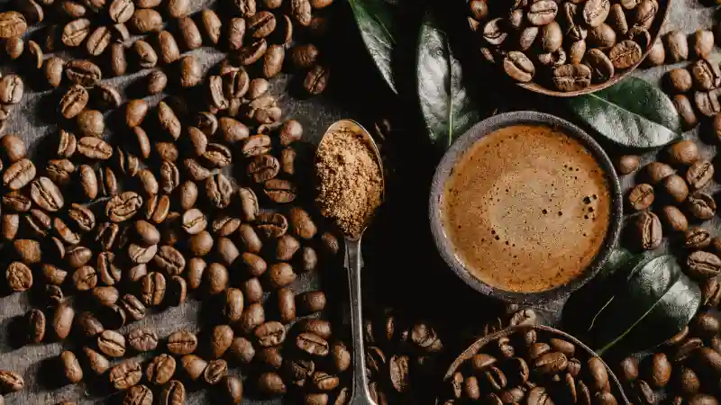

Natural
Coffee Beans
Dari kebun terbaik, dipetik dengan tangan, dan disangrai sempurna untuk secangkir kopi yang jujur rasanya.

Dari kebun terbaik, dipetik dengan tangan, dan disangrai sempurna untuk secangkir kopi yang jujur rasanya.